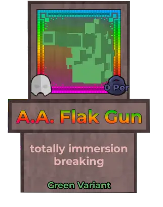
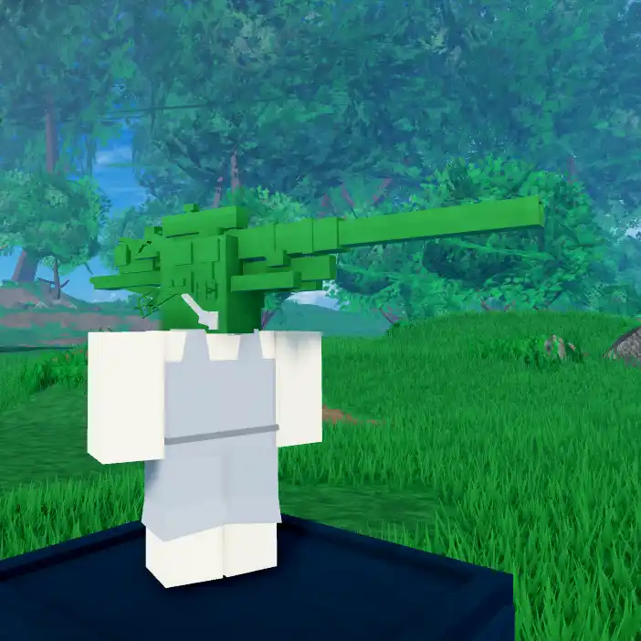
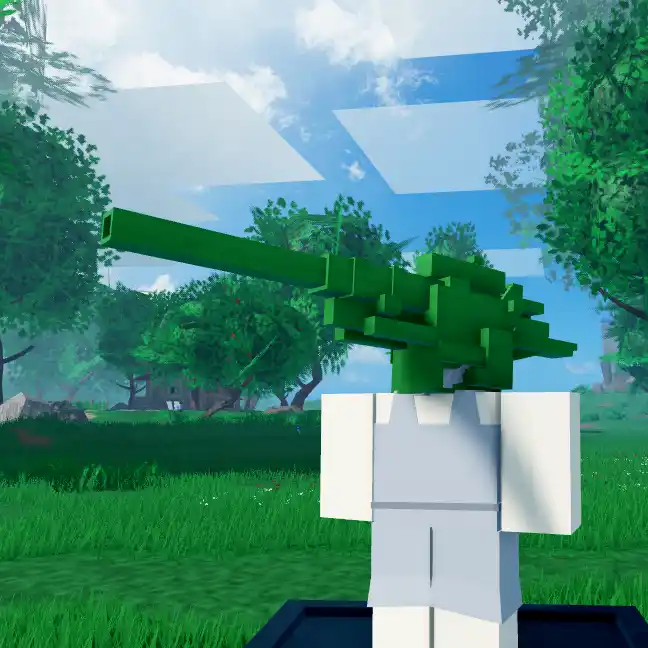
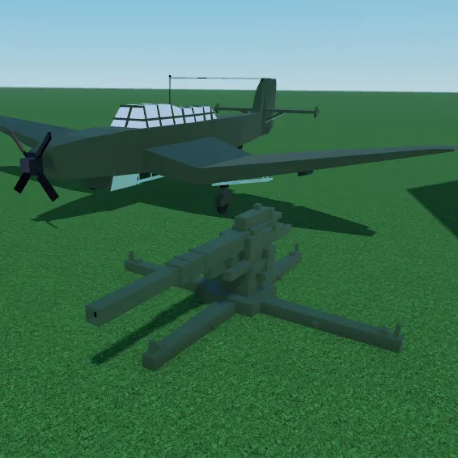
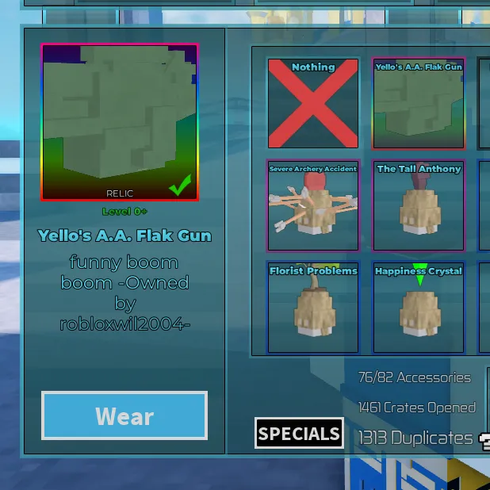
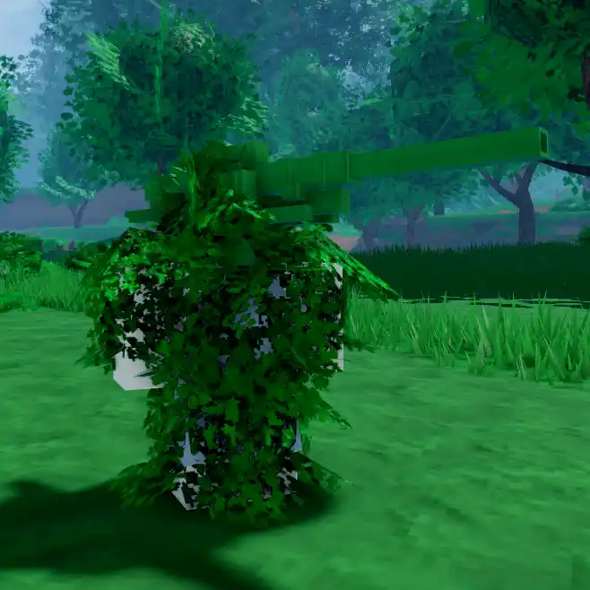
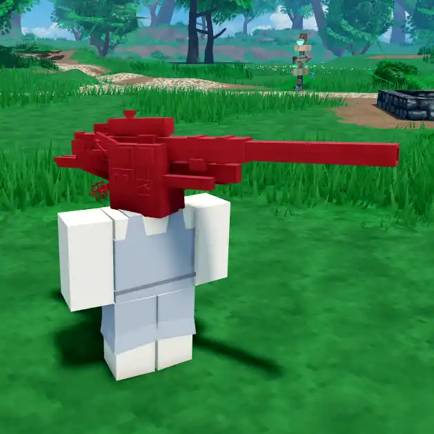
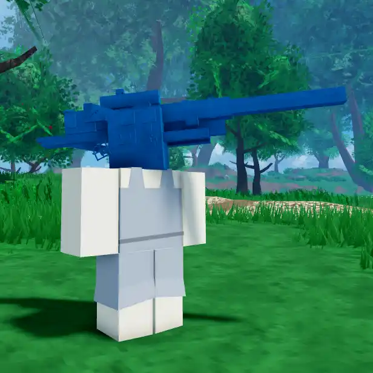
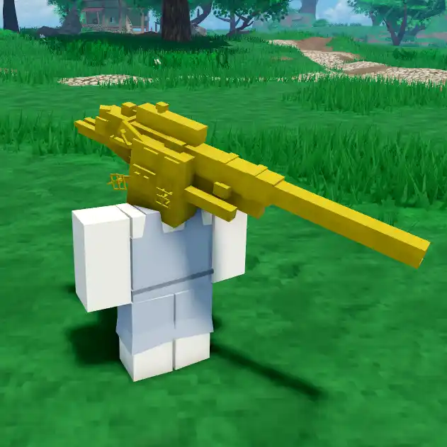

A.A. Flak Gun

Info
Slot: Head
Recolorable?: Yes
Unique Colors: None
Particle Effects: None
Sound Effects: None
Owner: YelloGerms69 / yello
Appearance & Effects
In-game description: completely immersion breaking
The A.A. Flak Gun, short for Anti-Air Flak Gun, appears to be a WW2-era flak gun designed for shooting down aircraft. It has a very long barrel, making it one of the largest relics in the game. It has a relatively simple model, with a few knobs on each side as well as a scope. The A.A. Flak Gun's default color green to give it a military look, but it can be recolored.
Inspiration
The model for the A.A. Flak Gun is one of the first models that the developer, Tid, created. The relic's owner yello wanted a tank as his relic, but Tid gave him the A.A. Flak Gun instead. Tid's discontinued game Bucket Bonk Battle 2 also has rare cosmetic's called relics, and the A.A. Flak Gun was one of them.

The A.A. Flak Gun viewed from the right side

The flak gun viewed from the left side
Image Gallery

The original A.A. Flak Gun model alongside some of Tid's other early models

The A.A. Flak Gun relic as it appears in Bucket Bonk Battle

The A.A. Flak Gun used with the Bush Disguise

Colored red

Colored blue

Colored yellow